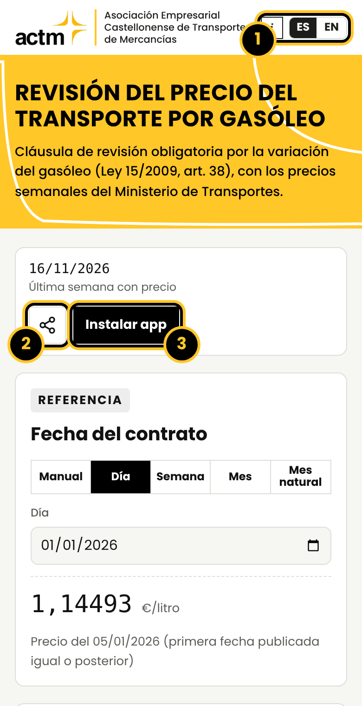
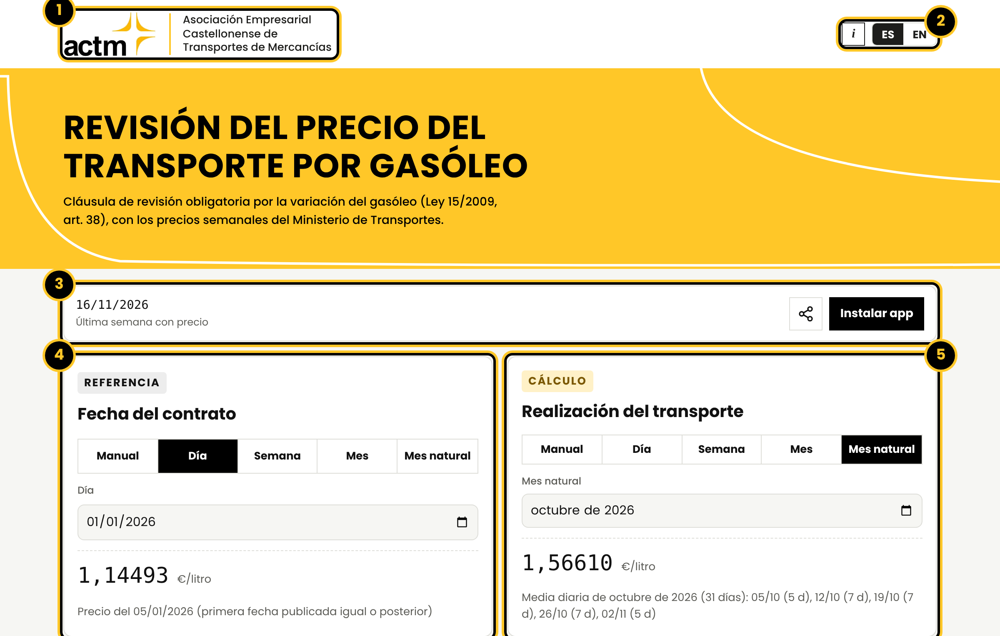
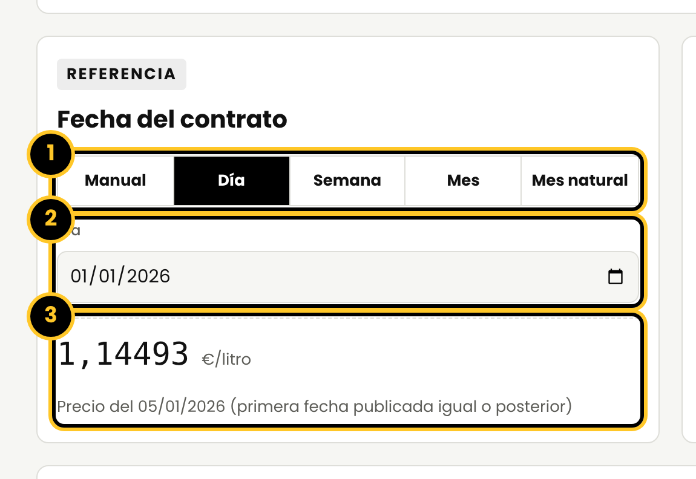
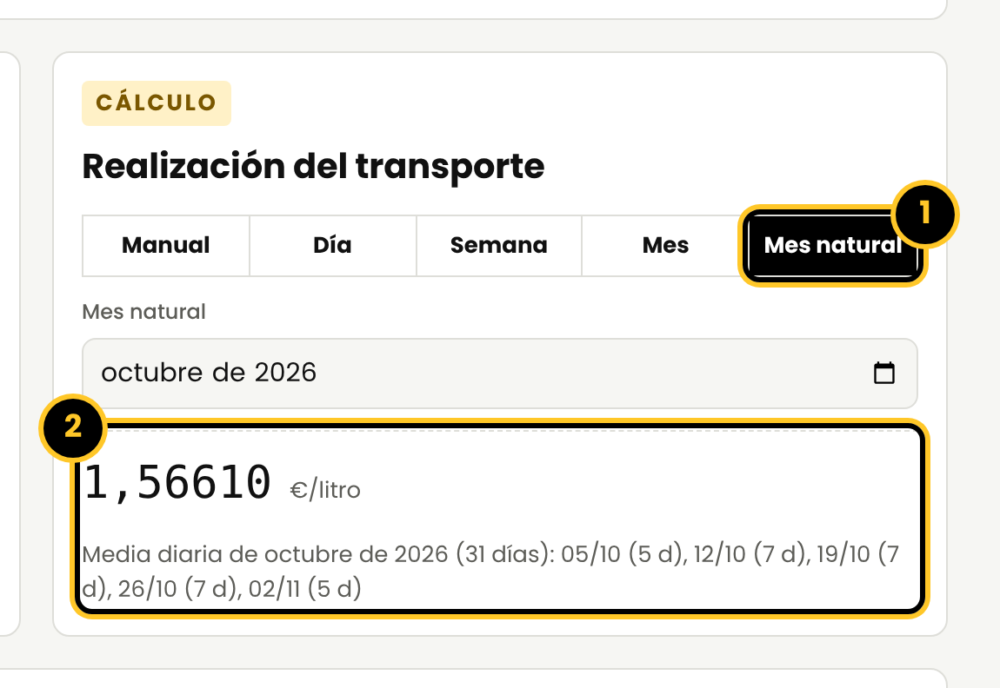
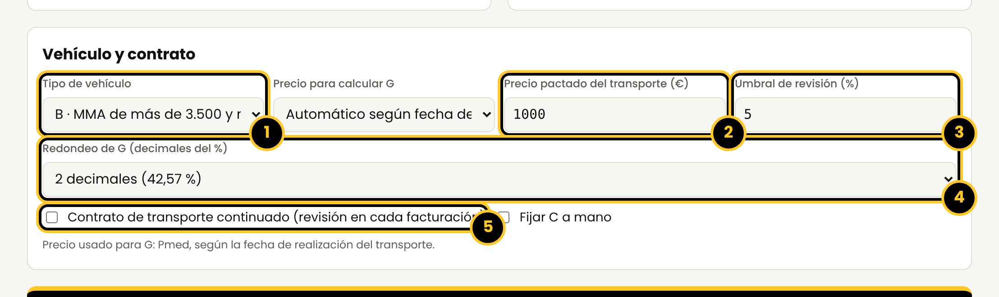
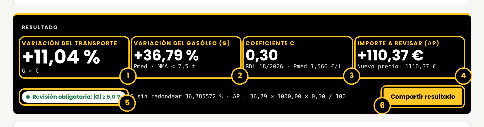
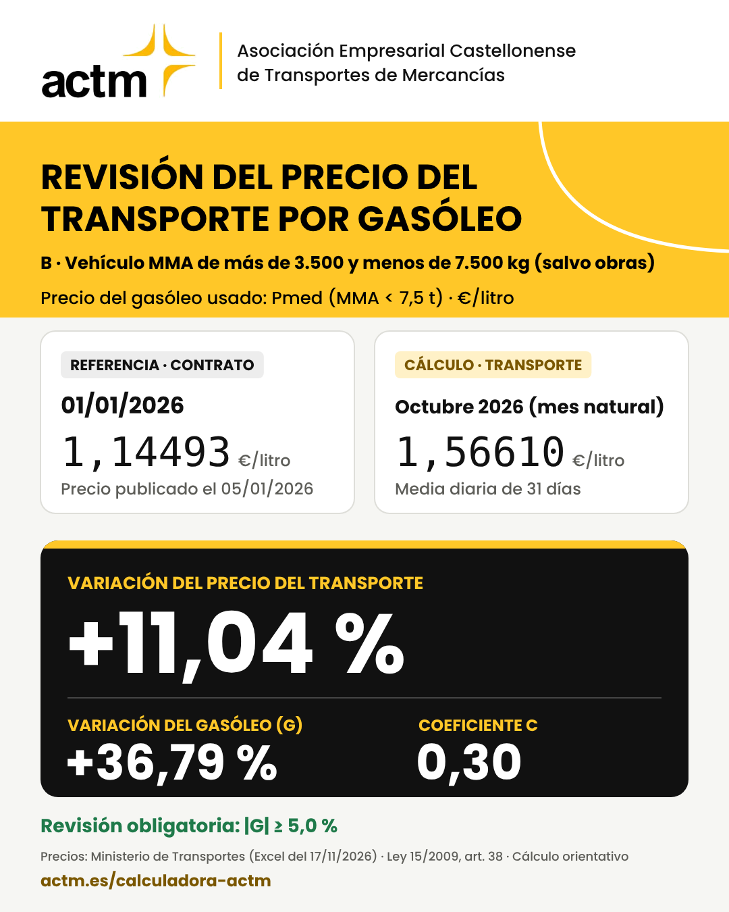
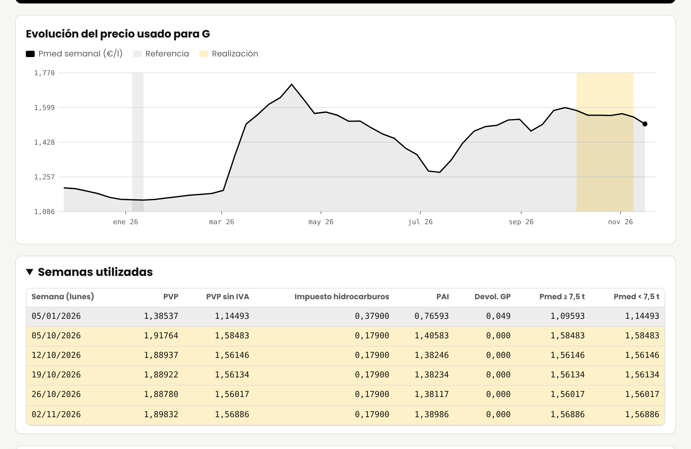
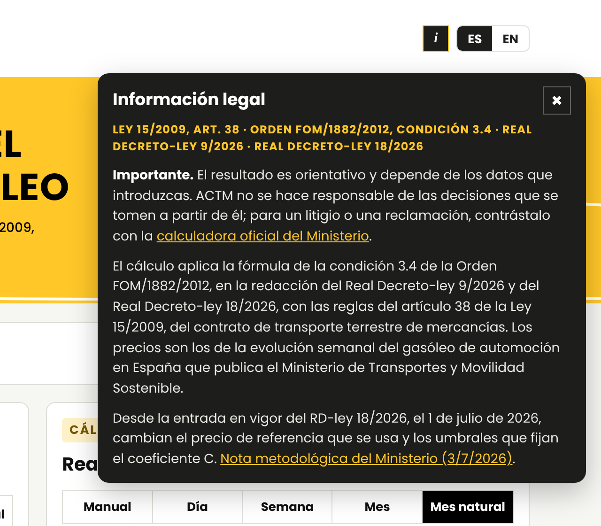

En un minuto
- ReferenciaLa fecha o el precio del gasóleo de tu contrato.
- CálculoEl día, la semana o el mes en que haces el transporte.
- VehículoElige el tipo y el tramo de peso (MMA).
- Precio y umbralEl precio pactado del servicio y el umbral de revisión.
- ResultadoLee el porcentaje a revisar y compártelo.
La calculadora aplica la fórmula oficial de la revisión del precio del transporte por carretera por la variación del gasóleo, con los precios semanales que publica el Ministerio de Transportes y Movilidad Sostenible. Los precios se actualizan solos cada semana: no tienes que descargar nada.
Qué es y para qué sirve
El artículo 38 de la Ley 15/2009, del contrato de transporte terrestre de mercancías, obliga a revisar el precio del transporte cuando el precio del gasóleo varía entre la fecha del contrato (la referencia) y la de realización del transporte (el cálculo). La fórmula está en la condición 3.4 de la Orden FOM/1882/2012, en la redacción del Real Decreto-ley 9/2026 y del Real Decreto-ley 18/2026.
Revisión (%) = G × C · G = (precio de cálculo − precio de referencia) / precio de referencia × 100
- G es la variación del precio del gasóleo, en %.
- C es el coeficiente que representa el peso del gasóleo en el coste del transporte. Depende del tipo de vehículo y del nivel del precio del gasóleo; la calculadora lo pone sola.
- La revisión es obligatoria cuando la variación del gasóleo (G) llega al 5 % (o al umbral más bajo que se haya pactado por escrito), y siempre en los contratos continuados, en cada periodo de facturación.
Abrirla e instalarla en el móvil
Entra en la web de ACTM, actm.es/calculadora-actm, o escanea el código QR de la portada, y abre la calculadora desde allí. Funciona en cualquier móvil, tableta u ordenador, sin registrarse.
Para tenerla como una app más, con su icono en la pantalla de inicio, ábrela desde actm.es/calculadora-actm y usa estos botones de la calculadora:
- 1Información legal e idioma. El botón i abre las referencias legales y el aviso de uso. ES / EN cambia entre español e inglés. Esta franja se queda siempre arriba.
- 2Compartir la app. Envía a un compañero la dirección actm.es/calculadora-actm (WhatsApp, correo…).
- 3Instalar app. En Android (Chrome) y en el ordenador (Chrome o Edge) se abre la ventana de instalación. Si tu navegador no la ofrece, el botón te dice cómo hacerlo: en iPhone, desde Safari, botón Compartir → Añadir a pantalla de inicio; en otros navegadores, menú ⋮ → Instalar aplicación o Añadir a pantalla de inicio. Si ya la tienes instalada y la abres desde su icono, el botón no aparece.

La pantalla de un vistazo

- 1Logotipo de ACTM. Enlace a la web de la asociación.
- 2Información legal e idioma.
- 3Última semana con precio del Ministerio y botón para compartir la calculadora.
- 4Referencia: el precio del gasóleo de la fecha del contrato (paso 1).
- 5Cálculo: el precio del gasóleo cuando se hace el transporte (paso 2).
Más abajo están Vehículo y contrato (paso 3) y el Resultado (paso 4). Todo se recalcula al momento, sin pulsar ningún botón, y la calculadora recuerda tus últimos datos.
La referencia del contrato
- 1Elige cómo se toma el precio de referencia (ver la tabla).
- 2Escribe la fecha, el mes o el precio, según la opción elegida.
- 3Precio resultante, en €/litro, y de qué semanas sale.

Las cinco formas de tomar el precio
| Opción | Qué precio usa | Cuándo usarla |
|---|---|---|
| Manual | El precio que escribas, en €/litro. | El contrato fija un precio de referencia concreto. |
| Día | El precio de la primera semana publicada igual o posterior al día indicado. | Referencia o transporte en una fecha concreta. |
| Semana | El precio de la semana (de lunes a domingo) que contiene el día indicado. | El contrato habla de «la semana» de la firma o del servicio. |
| Mes | La media de los precios semanales publicados con fecha dentro del mes. | Revisiones mensuales con la media simple del mes. |
| Mes natural | La media de todos los días del mes: cada día toma el precio de la primera semana publicada igual o posterior a ese día. | Revisiones mensuales en las que cada día del mes pesa lo mismo. |
El precio de cálculo

Funciona igual que la referencia, con las mismas cinco opciones, pero para el momento en que se hace el transporte.
- 1Opción elegida: aquí, Mes natural.
- 2Precio resultante y detalle de las semanas y los días que entran en la media.
Si el mes aún no ha terminado o faltan semanas por publicar, la calculadora hace la media con los días que ya tienen precio y avisa de cuántos faltan.
Con la opción Manual también se pide la fecha del transporte, porque decide la norma aplicable y el coeficiente C.
Vehículo y contrato

- 1Tipo de vehículo, con su tramo de masa máxima autorizada (MMA). Decide el coeficiente C y qué precio del gasóleo se usa (ver la tabla).
- 2Precio pactado del transporte, en euros, para calcular el importe de la revisión.
- 3Umbral de revisión: 5 % por defecto, o el umbral más bajo que se haya pactado por escrito.
- 4Redondeo de G: decimales con los que se redondea la variación del gasóleo antes de multiplicarla por C (2 por defecto).
- 5Contrato continuado: márcalo si el contrato es de servicios continuados; la revisión se aplica entonces en cada facturación, aunque no se llegue al umbral.
Tipos de vehículo
| Opción | Vehículo | Precio del gasóleo que usa |
|---|---|---|
| A | MMA de 20.000 kg o más (salvo obras) | Pmed MMA ≥ 7,5 t |
| B ≥ 7,5 t | MMA desde 7.500 hasta 20.000 kg (salvo obras) | Pmed MMA ≥ 7,5 t |
| B < 7,5 t | MMA de más de 3.500 y menos de 7.500 kg (salvo obras) | Pmed MMA < 7,5 t |
| C ≥ 7,5 t | Obras, MMA desde 7.500 kg | Pmed MMA ≥ 7,5 t |
| C < 7,5 t | Obras, MMA de más de 3.500 y menos de 7.500 kg | Pmed MMA < 7,5 t |
| D | MMA de 3.500 kg o menos | Pmed MMA < 7,5 t |
Leer el resultado

- 1Variación del transporte: el porcentaje en que hay que revisar el precio (G × C). Es la cifra que se aplica.
- 2Variación del gasóleo (G) y el precio usado (aquí, Pmed MMA < 7,5 t).
- 3Coeficiente C y la norma de la que sale.
- 4Importe a revisar sobre el precio pactado, y el nuevo precio.
- 5Veredicto: si la revisión es obligatoria (G alcanza el umbral, o contrato continuado) o no.
- 6Compartir resultado (paso 5).
Ejemplo de la guía
Camión B de menos de 7,5 t. Referencia: día 01/01/2026 (precio publicado el 05/01/2026: 1,14493 €/l). Cálculo: octubre de 2026, mes natural (1,56610 €/l). Precio pactado: 1.000 €.
C = 0,30 porque, desde el 01/07/2026 (RDL 18/2026), en un vehículo B el coeficiente es 0,30 cuando el Pmed del transporte está entre 1,28 y 2,13 €/l (aquí, 1,566 €/l). La tabla completa está en Cómo se calcula, al final de la calculadora.
Compartir el resultado
El botón Compartir resultado crea una imagen con todos los datos del cálculo, lista para enviar al cliente o archivar:
- En el móvil se abre el menú de compartir: elige WhatsApp, correo, etc.
- En el ordenador la imagen se copia: pégala con Ctrl + V en WhatsApp Web, en un correo o en un documento.
La imagen recoge el vehículo, el precio usado, la referencia y el cálculo con sus fechas, la variación del gasóleo, el coeficiente, la revisión y si es obligatoria, con la fecha de los datos del Ministerio.

Gráfica, semanas utilizadas e información legal

La gráfica muestra la evolución del precio semanal del gasóleo, con las bandas de la referencia y del cálculo. En Semanas utilizadas están todos los precios del Ministerio que entran en el cálculo (PVP, PVP sin IVA, impuesto, PAI, devolución y Pmed), para comprobar cada cifra. Cómo se calcula explica la fórmula y las tablas del coeficiente C.

El botón i de la cabecera abre las referencias legales (Ley 15/2009, Orden FOM/1882/2012, RDL 9/2026 y RDL 18/2026) y el aviso de uso, con enlace a la calculadora oficial del Ministerio.
Con ES / EN puedes mostrar la calculadora en inglés, útil para clientes o cargadores extranjeros. La imagen que se comparte sale en el idioma elegido.
Preguntas frecuentes
- ¿Cuándo se actualizan los precios?
- El Ministerio publica cada semana el precio medio del gasóleo. La calculadora lo comprueba varias veces al día y lo incorpora sola; la fecha aparece arriba, en «Última semana con precio».
- ¿Por qué un día sin precio muestra «—»?
- Porque el Ministerio aún no ha publicado la semana que le corresponde. Con la opción Día se usa la primera semana publicada igual o posterior a la fecha; si todavía no existe, no hay precio.
- ¿Qué diferencia hay entre «Mes» y «Mes natural»?
- «Mes» hace la media simple de las semanas publicadas en el mes. «Mes natural» pondera por días: cada día del mes cuenta lo mismo, así que una semana que cubre 7 días pesa más que una que cubre 2.
- ¿Por qué cambia el resultado si elijo B ≥ 7,5 t o B < 7,5 t?
- Porque el Ministerio publica dos precios medios (Pmed): para vehículos de 7,5 t o más se descuenta la devolución del gasóleo profesional. En las semanas en que esa devolución es cero, los dos precios coinciden; cuando no, el resultado cambia. Elige siempre el tramo real de tu vehículo.
- ¿Puedo fijar el coeficiente C a mano?
- Sí, con la casilla «Fijar C a mano», si el contrato pacta un coeficiente concreto.
- ¿El resultado es vinculante?
- Es un cálculo orientativo que depende de los datos que introduzcas. Ante una reclamación o un litigio, contrástalo con la calculadora oficial del Ministerio de Transportes, enlazada desde el botón «i».